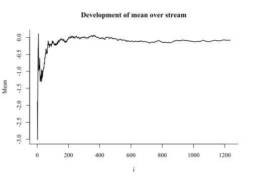

How do we calculate a sample mean? This is probably one of the most basic questions in statistics, with as its common answer the following: Given a vector of sample values \(\bf{x}\) of length \(N\), the sample mean \(m\) is defined as \[m = \frac{1}{N}\sum^N_{i=1}x_i\]
But this first assumption, given a vector of sample values, recently did not hold for me. The sheer size of the vector that I needed to process made sure it did not fit on my computer. Even worse, I had no way of knowing how big this vector would exactly be! My question was thus: how do I calculate the mean of a stream of sample values of indetermined length?
The solution to this was rather simple for calculation of the mean. We initialise the value of the mean to 0, and then update our current guess of the mean with the next value’s weighted deviation from the current mean. This happens like so:
\[m_{i} = m_{i-1} + \frac{(x_i-m_{i-1})}{i}\]
Reading the formula in words, the \(i^{th}\) mean is the \((i-1)^{th}\) mean plus the deviation of the \(i^{th}\) input value from this current mean divided by the current \(i\), i.e., the amount of values that have been input.
In code this is extremely simple to implement (click the code button on the right):
set.seed(3665364)
# let's assume we receive data of length 1234
streamlength <- 1234
# initialise m_i
m_i <- 0
for (i in 1:streamlength) {
m_prev <- m_i
x_i <- rnorm(1, 0, 3)
m_i <- m_prev + (x_i - m_prev)/i
}
print(m_i)## [1] -0.08489741Note that in the above code we never save the full vector \(\bf{x}\); we only ever save the current and previous versions of the mean. This is perfect for an extremely large, variable length input vector such as the one I talked about in the introduction!
set.seed(3665364)
# let's assume we receive data of length 1234
streamlength <- 1234
# initialise m_i
means <- numeric(streamlength)
for (i in 1:streamlength) {
x_i <- rnorm(1, 0, 3)
means[i] <- ifelse(i == 1, x_i, means[i - 1] + (x_i - means[i - 1])/i)
}
par(family = "serif")
plot(1:streamlength, means, type = "l", main = "Development of mean over stream",
xlab = "i", ylab = "Mean", bty = "L", lwd = 1.5)
Notice the big changes at the start of the stream, and the smaller changes at the end, asymptotically converging to the “true” mean value that we set here at 0.
We can also see this as a form of bayesian updating, if we turn the formula around like so:
\[m_{i} = \frac{(x_i-m_{i-1}) + i \cdot m_{i-1}}{i}\]
Here, we set the prior to be \(i \cdot m_{i-1}\), then we see \((x_i-m_{i-1})\) as our new data/evidence, \(m_i\) is our posterior, and \(i\) is the normalising constant. Cool!
The algorithm above translates nicely into the bayesian framework, but as with so many algorithms, it can be made much more efficiently. It turns out that all we have to do is remember the sum of the values input in the stream and a counter i that indicates how many values went in. Then, when asking for the mean, all we need to do is \(m_i=\frac{\texttt{sum}}{\texttt{i}}\). Simple!
This is better for three reasons:
sum, the sum of squares, and the counter i. Then, we can calculate the variance using the formula \(Var(X) = E[X^2] - (E[X])^2\) to calculate the variance: \(s^2_i=\frac{\texttt{sum of squares}}{\texttt{i}}-\left(\frac{\texttt{sum}}{\texttt{i}}\right)^2\). For each higher order moment, we need to remember a higher power sum in this framework.Let’s do it!
set.seed(3665364)
# let's assume we receive data of length 1234
streamlength <- 1234
# initialise
sum <- 0
sumsq <- 0
i <- 0
for (j in 1:streamlength){
value <- rnorm(1,0,3)
sum <- sum + value
sumsq <- sumsq + value^2
i <- i+1
}
list(sum = sum,
sum_of_squares = sumsq,
i = i,
mean = sum/i,
variance = sumsq/i - (sum/i)^2)## $sum
## [1] -104.7634
##
## $sum_of_squares
## [1] 11547.45
##
## $i
## [1] 1234
##
## $mean
## [1] -0.08489741
##
## $variance
## [1] 9.35053For the mean this was simple to implement. The question I’m pondering in the back of my mind throughout all this is the following: can any statistic be transformed into such a sequential statistic? How does this work for variance? Standard deviation? The median / other quantiles? If you let me know, I’ll be sure to update this blog post with the additions.